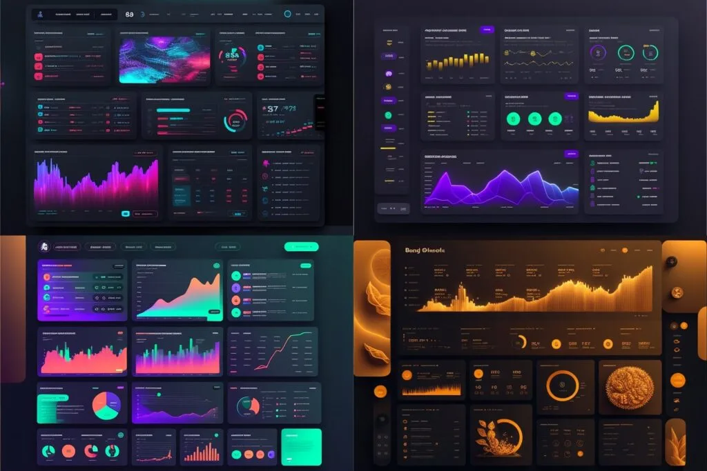
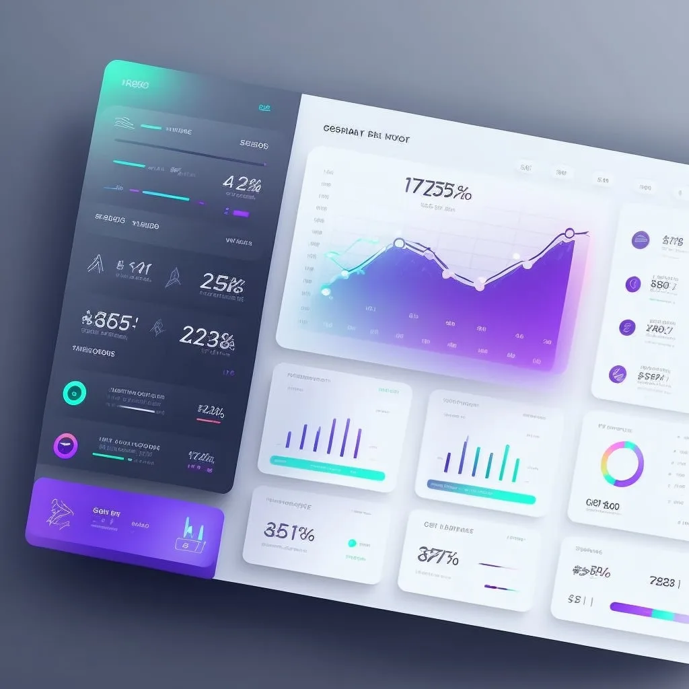
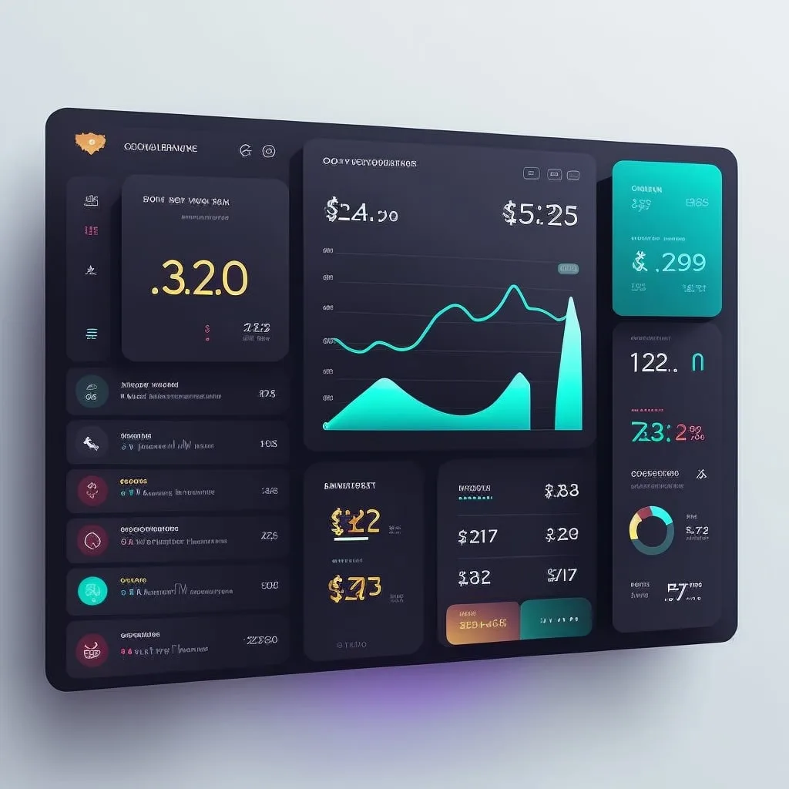
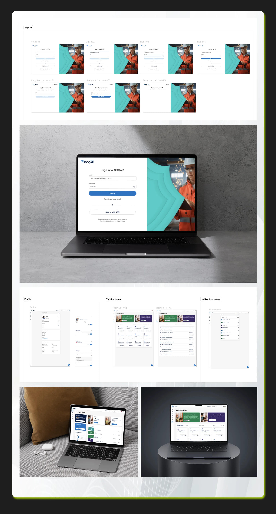

Problem Statement
How might we enable ISOQAR customers to independently manage their certifications, documents, and site visits through a unified, intuitive portal—reducing operational workload while improving transparency, efficiency, and user satisfaction?
Role & Responsibilities
As the Lead Product Designer for the Alcumus ISOQAR project, I guided the end-to-end redesign of the customer certification portal while driving the strategic adoption of AI-assisted design workflows.
I led a cross-functional squad consisting of product, engineering, and QA, and simultaneously mentored both junior and senior designers who were responsible for redesigning related legacy sections across the broader Alcumus ecosystem. My role spanned discovery, research, Information Architecture, UX strategy, UI design, and delivery.
Alcumus Sitemaps
To build clarity across a highly fragmented legacy system, I created comprehensive sitemaps for the entire Alcumus product suite, mapping every feature, integration, dependency, and user touchpoint across certification, audits, training, reporting, and account management. This allowed leadership and engineering to see the full product landscape for the first time in a structured, visual format.
I also produced a detailed sitemap for the ISOQAR certification portal — the section I was redesigning — breaking down the complete end-to-end user journey, including onboarding, certification status tracking, visit bookings, payments, reports, invoices, documentation, and stakeholder communication.

Understanding Users, Their Needs, and Business Goals
I led the discovery research process to identify ISOQAR’s diverse user base and their pain points: first-time certification seekers, returning customers, organizations transitioning from another certification body, and users referred from SafeContractor.
Users consistently needed a simple, reliable platform where they could log in, see the status of their certifications, book or manage site visits, view certificates and invoices, download accreditation assets, and access training resources — without relying on phone and email communication.
These insights aligned directly with the business goals: reducing operational overhead, decreasing support dependency, enabling self-serve account management, and establishing a scalable foundation for a future centralized Alcumus portal.

MidJourney AI: Visual Moodboards and Concept Inspiration
To accelerate visual exploration, I used MidJourney AI to generate moodboards that explored different directions for look and feel, layout structures, card patterns, dashboard concepts, and visual storytelling approaches. This allowed the team to align quickly on a modern aesthetic that reflected trust, professionalism, and certification authority while also appealing to a wide range of business users.



FigmaMake AI: Rapid Concept Generation and Design Acceleration
Leveraging FigmaMake AI, I generated early UI concepts, component variations, and structural patterns to explore multiple design directions in minutes instead of days. This approach accelerated ideation, allowing me to test hypotheses quickly and evaluate layout systems, dashboard compositions, and navigation models before refining the strongest concepts into high-fidelity designs.

ChatGPT for UX Writing & Content Strategy
To support clear communication across complex certification workflows, I used ChatGPT to generate and refine UX copy, microcopy, tooltips, contextual help, and instructional guidance. This ensured that the product’s content was not only precise and compliant but also conversational, supportive, and user-friendly.
Using AI for drafting allowed me to iterate on tone and clarity rapidly, ensuring that content aligned with brand voice while reducing friction in multi-step certification processes.

Research, Options & Trade-offs
What research revealed
Most support calls and emails weren't real problems. Customers were asking about certification status, upcoming visit dates and where to find documents, information the system already had but didn't show them.
Directions explored
- Option A: Reskin the legacy portal page by page. Dropped: it kept the fragmented navigation that was causing the confusion.
- Option B: A dashboard-first portal built around "what needs my attention" (status, next visit, outstanding actions). Chosen.
- Option C: A guided wizard for each task. Dropped: too rigid for repeat users who manage several certificates.
Trade-offs
We shipped status tracking, documents and visit booking first and left payments in the legacy flow, so we could launch sooner on top of the existing back-end.
Results
Support tickets from calls and emails dropped by 80%.
High-Fidelity Designs
The final design system and high-fidelity screens brought together the research insights, AI-driven concepting, and stakeholder alignment into a polished, enterprise-ready experience. The new portal features a streamlined dashboard with clear certification status, simplified navigation, a guided visit booking experience, self-serve access to certificates and invoices, and a modern design system built for scalability.
The UI prioritizes clarity, trust, accessibility, and professional polish — supporting users who may be new to certification processes while providing efficiency and control for returning customers.
